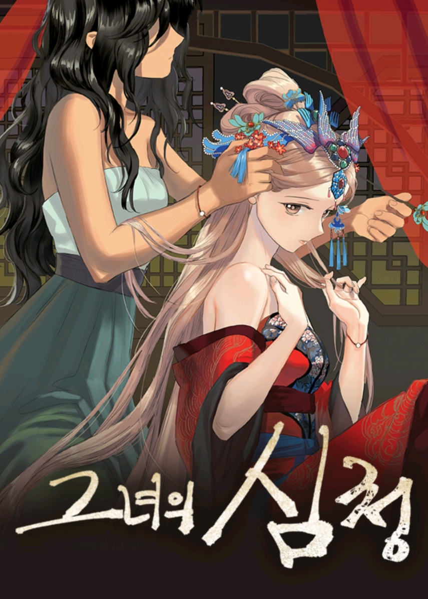

| 그녀의 심청 | |
 | |
| 작가 | 스토리 seri 트위터 그림 비완 트위터 |
| 장르 | 순정, 드라마, GL |
| 연재 요일 | 화요일 |
| 연재 기간 | 2017. 09. 12 ~ 2019. 03. 26 (본편 완결) |
| 연재처 | 코미코바로가기 봄툰바로가기 다음 웹툰바로가기 카카오페이지 바로가기 |
| 심의 등급 | 전체 이용가 15세 이용가 (카카오페이지) |
[그녀는 왜 공양미를 대신 내준다고 했을까?]
심청전의 장 승상 부인은 왜 청이한테 공양미 300석을 대신 내준다고 했을까? 장 승상 부인이 청이에게 그토록 마음을 쓴 이유는 뭘까? 그리고 청이는 왜 그걸 거절하고 인당수로 갔을까? 소외 계층 여성인 심청과 상류 사회 여성인 장 승상 부인, 두 여성의 연대와 사랑이 아름답고 섬세하게 펼쳐진다.
그녀의 심청은 seri, 비완 작가가 저스툰에서 연재했던 gl 웹툰으로, 널리 알려진 전래동화 <심청전>을 현대적으로 재해석한 작품이다.